Activity1
UMLActivity
Untitled
::
Activity1
Description
none
Diagrams

ActivityDiagram1
Groups
Peternak
Layar Smart Phone
Sistem
Nodes
Action1
DecisionNode1
Menampilkan Halaman Login
Memuat Halaman Pemeliharaan
Memuat Halaman Panen
Memuat Halaman Awal
Mengkik Masuk
ForkNode1
DecisionNode2
Meampilkan Halaman Awal
JoinNode1
Memanen Madu
Edges
(InitialNode1→Mengelola Madu)
(Mengelola Madu→ForkNode1)
(ForkNode1→Mempersiapkan Stup)
(Mempersiapkan Stup→Menempelkan QR Code)
(Menempelkan QR Code→Memasukan Ratu Lebah)
(Memasukan Ratu Lebah→JoinNode1)
(ForkNode1→Memeriksa Stup)
(Memeriksa Stup→DecisionNode2)
BURUK (DecisionNode2→Melakukan Penanganan)
BAIK (DecisionNode2→JoinNode1)
(JoinNode1→membuka HP)
(membuka HP→Membuka Aplikasi Scaner)
(Membuka Aplikasi Scaner→Scan QR Code)
(Scan QR Code→Mengunjungi link)
(Melakukan Penanganan→JoinNode1)
(Scan QR Code→Menampilkan Link)
(Menampilkan Link→Mengunjungi link)
(Mengunjungi link→Mengecek Data)
(Mengecek Data→Mengecek Data)
(Mengecek Data→Membuat Pesan)
(Membuat Pesan→Menampilkan Halaman Awal)
(Menampilkan Halaman Awal→Menampilkan Pesan)
(Menampilkan Pesan→Mengkik Masuk)
(Mengkik Masuk→Menampilkan Halaman Login)
(Memasukan Code Token→Validasi)
(Validasi→DecisionNode2)
Gagal (DecisionNode2→Menampilkan Pesan Error)
(Menampilkan Pesan Error→Menampilkan Halaman Login)
Berhasil (DecisionNode2→Mengecek Data)
(Mengecek Data→ForkNode1)
(ForkNode1→Belum Mengisi Lebah)
(Belum Mengisi Lebah→Menampilkan Notifikasi Sudah Memasukan Lebah ?)
(Menampilkan Notifikasi Sudah Memasukan Lebah ?→Memilih Kondisi)
YA (Memilih Kondisi→DecisionNode2)
(DecisionNode2→Menghitung Waktu Panen)
(Menghitung Waktu Panen→Menyimpan Data)
TIDAK (DecisionNode2→Meampilkan Halaman Awal)
(Menampilkan Notifikasi Succes→Meampilkan Halaman Awal)
(Menyimpan Data→Menampilkan Notifikasi Succes)
(Menampilkan Halaman Login→Memasukan Code Token)
(ForkNode1→Proses Pemeliharaan)
(Proses Pemeliharaan→Menampilkan Form Pemeliharaan)
(Menampilkan Form Pemeliharaan→Mengisi Form Pemeliharaan)
(Mengisi Form Pemeliharaan→Validasi)
(Validasi→DecisionNode2)
Gagal (DecisionNode2→Menampilkan Pesan Error)
(Menampilkan Pesan Error→Menampilkan Form Pemeliharaan)
Berhasil (DecisionNode2→Menyimpan Data)
(Menyimpan Data→Menampilkan Notifikasi Succes)
(Menampilkan Notifikasi Succes→Menampilkan Halaman Awal)
(ForkNode1→Waktunya Panen)
(Waktunya Panen→Menampilkan Form Panen)
(Menampilkan Form Panen→Mengisi Form Panen)
(Mengisi Form Panen→Validasi)
(Validasi→DecisionNode2)
Gagal (DecisionNode2→Munculkan Pesan Error)
(Munculkan Pesan Error→Menampilkan Form Panen)
Berhasil (DecisionNode2→Menyimpan Data)
(Menyimpan Data→Menampilkan Notifikasi Succes)
(Menampilkan Notifikasi Succes→Menampilkan Halaman Awal)
(Keluar Website→ActivityFinalNode1)
(Meampilkan Halaman Awal→JoinNode1)
(Menampilkan Halaman Awal→JoinNode1)
(Mengisi Form Panen→JoinNode1)
(JoinNode1→Keluar Website)
(ForkNode1→Memanen Madu)
(Memanen Madu→JoinNode1)
Properties
Name
Value
name
Activity1
stereotype
null
visibility
public
isReentrant
true
isReadOnly
false
isSingleExecution
false
Owned Elements
ActivityDiagram1